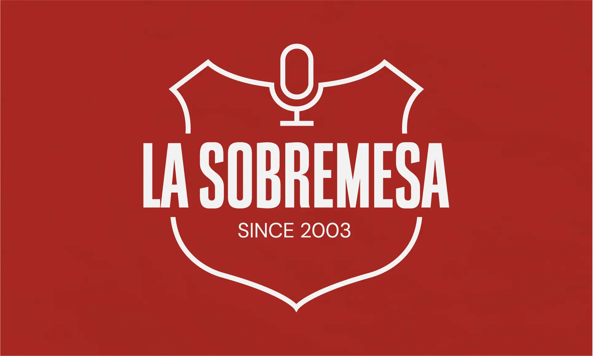

Identidad visual para una exposición universal en Sevilla cuya finalidad es poner en valor la cultura, el arte y el diseño andaluz.

Identidad visual para un podcast de dos amigos que charlan sobre temas culturales que les apasionan. Tradición y juventud se unen en un mismo espacio.
Diseño de vinilo recopilatorio de la música que marcó el género cinematográfico español sobre historias de delincuentes jóvenes de bajos recursos.